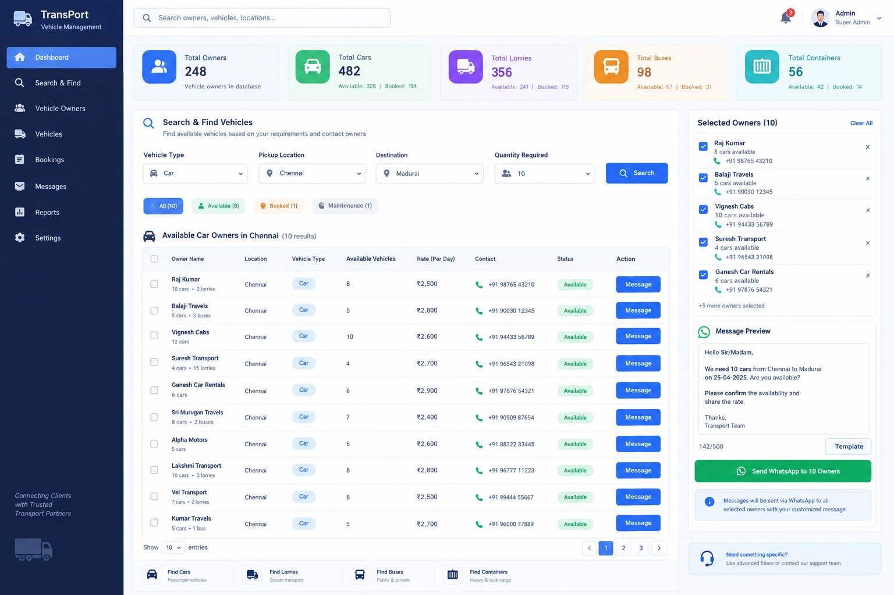
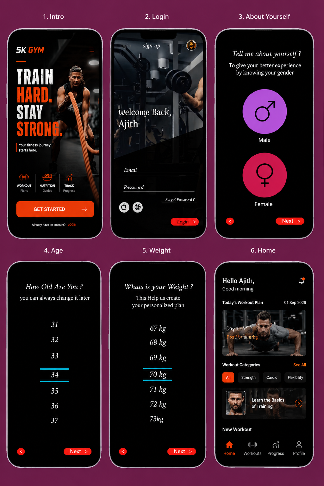
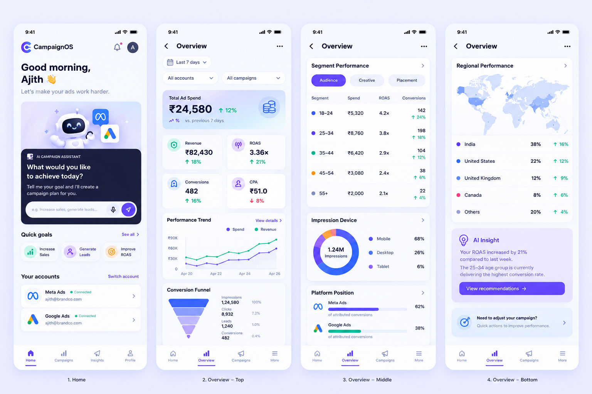

↗
↗
MOBILE APP · UI/UX
Smart Ride HMI App
EV-focused interface concept for vehicle information and ride-related controls.
01
Hello, I'm Ajith T
UI/UX & Web Designer focused on creating intuitive interfaces, meaningful user journeys and responsive digital products.
01 / ABOUT
I'm Ajith, a B.Tech Artificial Intelligence & Machine Learning graduate with a passion for designing clear, engaging and useful digital experiences.
I work across UI/UX design and web development — from understanding a requirement and shaping a user flow to creating polished interfaces and building responsive web pages. I enjoy turning complex ideas into simple experiences.
My experience also includes vehicle testing and validation, which has strengthened my attention to detail, structured problem-solving and understanding of real-world product behaviour.
Research-led thinking, wireframes, visual hierarchy and usable interfaces.
Responsive layouts using HTML, CSS and JavaScript fundamentals.
Bringing product, testing and user experience perspectives together.
Hindusthan College of Engineering & Technology · 2021–2025
CGPA 8.302 / SELECTED WORK
A mix of product interfaces, dashboards, websites and visual design.
↗
EV-focused interface concept for vehicle information and ride-related controls.

↗Dashboard concept for vehicle-owner discovery, bookings and operations.

↗Fitness membership and gym experience interface with prototype screens.
 ↗
↗
Community sharing concept focused on accessible, straightforward interactions.

↗AI campaign assistant mobile interface concept.
.jpg) ↗
↗
Business website design presenting products, services and brand information.
Service-led website concept with beauty services and customer enquiry flow.
 ↗
↗
Logo, poster and promotional design explorations for business communication.
More explorations include ShareBox, Fitness Tracker, Travel App, logo collections, banners and promotional creatives.
03 / HOW I WORK
FROM FIRST QUESTION TO FINAL SCREEN
A clear process helps me understand the problem, organise information and create interfaces that are easier to use.
Clarify requirements, goals and user needs.
Map content, key tasks and user flows.
Sketch layouts and create wireframes.
Build consistent, accessible UI screens.
Connect screens and demonstrate interactions.
Review feedback and improve the experience.
04 / CAPABILITIES
TOOLS ARE ONLY PART OF THE STORY
05 / EXPERIENCE
Working across EV vehicle testing and validation, vehicle performance checks, test rides, component quality observations, issue documentation and dashboard/UI-related work.
Created promotional videos, posters and marketing creatives to support brand visibility and product communication.
06 / CONTINUOUS LEARNING
LEARNING NEVER STOPS
07 / CONTACT
HAVE A PROJECT OR OPPORTUNITY?